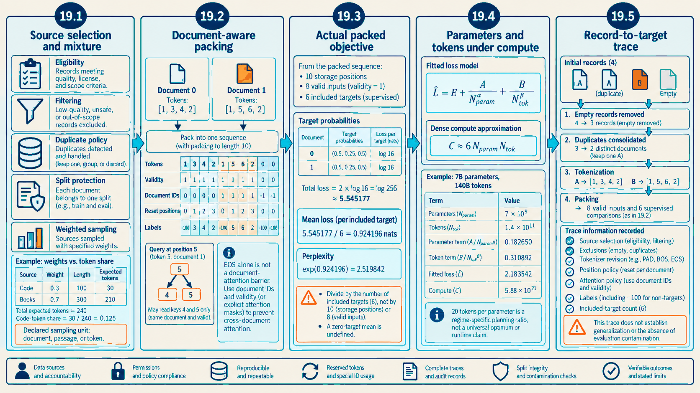
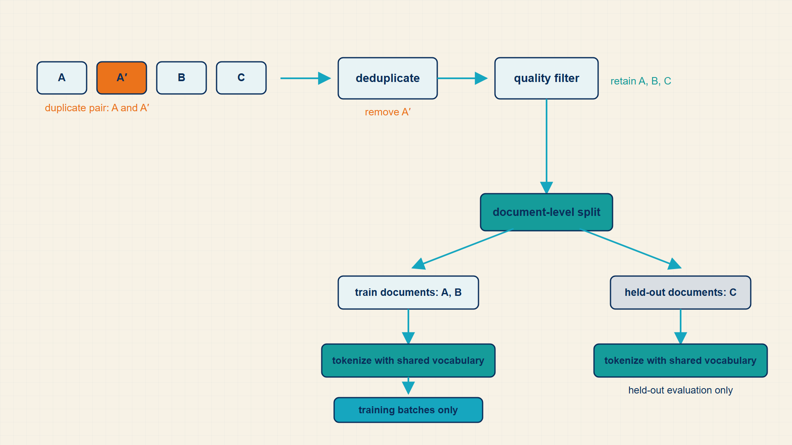

19 Pretraining data and compute allocation
The same prediction objective can fit different behavior when some records occur more often or are removed. A training budget also limits how many tokens a model of a chosen size can process. Data selection, target construction, parameter count, and computation therefore constrain one another.
Preparing useful training data includes preserving the intended boundaries when short documents share storage. The number of occupied positions alone does not identify the number of valid supervised predictions.

19.1 Source selection and the fitted distribution
Repeating a document increases its contribution to a training average without adding a distinct observation. Removing a source can remove useful patterns as well as unwanted material. These choices change what the objective rewards before an optimizer calculates its first update.
Filtering removes or downweights records using declared criteria, such as language, empty content, corruption, or suitability for the task. A criterion based on metadata or model scores can make mistakes, so retained and rejected samples need inspection. Rights, privacy, and access requirements also constrain which records may be used. These are separate from a text-quality score. A fluent, relevant record may still be excluded under those requirements, while a permitted record may be unsuitable training text. Keep the source and applicable use conditions with each collection, then apply quality criteria within the eligible data. Neither a high score nor deduplication establishes permission to use a record.
Deduplication identifies repeated or sufficiently similar records and applies a retention policy. Exact matching requires a stated normalization rule. Near-duplicate matching also needs a similarity measure and threshold. Removing repeats changes their effective weight, and an overly broad rule can discard distinct useful examples.
Separate overlap checks compare training candidates with held-out evaluation material. A training-only duplicate check cannot establish that test answers are absent. Splits and related-record grouping should be fixed before fitted preprocessing uses evaluation information, as Chapter 9 explained.
A corpus mixture samples from several retained sources according to declared weights. For source index \(s\), let \(P_s\) be its distribution over the unit being sampled:
\[ P_{\mathrm{data}}=\sum_s\alpha_sP_s,\quad\sum_s\alpha_s=1 \tag{19.1}\]
Every weight satisfies \(\alpha_s\ge0\), and the weights sum to one. A source-mixture weight is the probability of choosing that source in this two-stage sampler. First choose \(s\), then choose an item according to \(P_s\). For an event \(A\), its probability is the sum of \(\alpha_sP_s(A)\) across sources.
The mixture rule does not specify whether the sampled item is a document, token, or fixed-length sequence. That unit changes the meaning of the percentages.
Example: Document proportions and token proportions
Choose code documents with weight 0.3 and book documents with weight 0.7. Ten independent document draws have expected counts three and seven. A realized set of ten draws can differ.
Suppose each selected code document has 100 tokens and each book document 300. Expected token contributions per draw are \(0.3(100)=30\) and \(0.7(300)=210\). Across many such draws, the code-token share approaches \(30/(30+210)=0.125\) under these fixed lengths.
Conclusion: A 30% document-selection probability does not imply 30% of the training tokens. If source weights instead select equally sized token blocks, the token proportions follow those block-selection weights.
Tokenization determines the lengths and IDs of retained records. A tokenizer revision can therefore change both the sampling proportions in tokens and the subsequent compute budget. Reporting only raw document count hides that change.
The datasets library can load or stream records, while the chosen tokenizer converts each record to IDs. A data collator assembles examples and their control arrays into batches. Loading software does not choose the intended source weights or boundary policy automatically.
19.2 Packing records without unintended cross-record targets
Several short documents can leave most slots unused when each receives a large fixed-width row. Sequence packing places multiple records into shared storage. The computation still needs to know which transitions and attention connections are intended.
One policy treats concatenated text as a continuous stream, allowing later records to attend to earlier ones. Another treats the records as independent sequences sharing storage. Neither policy follows from inserting EOS alone. The example below chooses independent documents.
Use PAD ID 0, BOS ID 1, EOS ID 2, and content IDs 3 through 6. Document A is [1,3,4,2], and document B is [1,5,6,2]. Packing both into a width-ten row gives [1,3,4,2,1,5,6,2,0,0].
The validity array is [1,1,1,1,1,1,1,1,0,0]. Document identifiers are [0,0,0,0,1,1,1,1,-1,-1], where -1 marks padding in this control array. Chosen position IDs reset within each document: [0,1,2,3,0,1,2,3,0,0]. Padding position IDs are placeholders, excluded by validity rules.
Array positions in this example are zero-based, matching Python indexing. For independent-document causal attention, a valid query may read a key only if both belong to the same document and the key is no later. Global query position 5 may therefore read keys 4 and 5, but not positions 0 through 3. An ordinary causal triangle would permit those earlier-document reads. An all-one token-validity array would permit them too.
EOS remains a real boundary token. It is not a two-dimensional attention barrier. The same-document condition must be consumed by attention or an equivalent segmented kernel. Position resets likewise require an implementation that accepts the intended position IDs.
The target policy includes each document’s content and EOS, while excluding prediction of a new document’s BOS from the preceding EOS. Unshifted loss labels are [-100,3,4,2,-100,5,6,2,-100,-100]. Their -100 entries follow the ignored-target convention in §2.2 and its loss reduction in §8.5. They are not input IDs.
After a manual next-token shift, the nine comparisons are:
| Input position | Input ID | Following label | Included? |
|---|---|---|---|
| 0 | 1 | 3 | Yes |
| 1 | 3 | 4 | Yes |
| 2 | 4 | 2 | Yes |
| 3 | 2 | -100 | No |
| 4 | 1 | 5 | Yes |
| 5 | 5 | 6 | Yes |
| 6 | 6 | 2 | Yes |
| 7 | 2 | -100 | No |
| 8 | 0 | -100 | No |
The first document’s EOS has no target transition into the second document. The second EOS likewise has no real following token. Six comparisons remain, all within one document. A causal loss interface that shifts internally should receive the unshifted labels instead, as §8.5 explained.
The supervised-position fraction is
\[ \operatorname{utilization}=\frac{\mathrm{supervised\,tokens}}{\mathrm{allocated\,positions}} \tag{19.2}\]
The denominator counts allocated positions and must be positive. The numerator counts included next-token targets under the specified policy. Here it is \(6/10=0.6\). Eight of ten positions contain retained input tokens. Input-token occupancy is therefore 0.8. Removing the two padding slots raises supervised-position utilization to \(6/8=0.75\), without adding a target.
The separate example allocates 1,024 positions and includes 900 targets. Its fraction is \(900/1024=0.87890625\), or 0.879. Neither fraction is a measured GPU utilization or throughput. Packing can reduce padding work while adding mask handling, indexing, or boundary-control costs.
Conclusion: Shared storage needs separate input validity, document boundaries, position conventions, and target inclusion. The example preserves two independent training sequences, rather than silently turning them into one conditional text stream.
19.3 The packed batch’s actual objective
The width-ten packed row contains six supervised comparisons. A reported mean loss must select exactly those six logits and targets. Treating every stored slot as a prediction task would change both the objective and gradient scale.
Suppose the model returns logits of shape \([1,10,V]\) for vocabulary size \(V\). Manual alignment under §8.5 uses the first nine logit rows and labels from positions 1 through 9. Their shapes become \([9,V]\) and \([9]\) for a direct cross-entropy call. The three ignored targets do not contribute to the unweighted mean.
Use supplied target probabilities \((0.5,0.25,0.5)\) for document A and the same three for document B. Each document contributes \(-\log0.5-\log0.25-\log0.5=\log16\approx2.772589\). Their combined loss is \(\log256\approx5.545177\).
Dividing by six gives mean loss approximately 0.924196 nats. Under the §8.5 definition, its perplexity is \(\exp(0.924196)\approx2.519842\) using unrounded loss. Dividing by ten would incorrectly count the storage slots. Dividing by eight would incorrectly count valid inputs rather than included targets.
Conclusion: Packing changes array layout without changing the six intended prediction events under this policy. The same included count must scale loss and parameter gradients. A zero-target batch has no defined mean and requires rejection or skipping before reduction.
Self-supervision obtains targets from recorded data rather than separate annotations. The causal, masked, and source-conditioned objectives in Chapter 18 still require different preparation rules. A response-only adaptation objective may exclude prompt targets while retaining prompt context. That is a later objective choice, not an automatic consequence of pretraining or packing.
The selected targets define the objective, while forward computation also processes their input context. In this example, six loss terms use eight real input tokens in ten allocated positions. A dense padded implementation may compute all ten.
Choosing parameter count and processed-token volume determines how much training work fits a compute budget. That volume must account for the actual padding and packing behavior rather than substituting the six-target loss divisor.
19.4 Parameter and data trade-offs under a compute budget
Increasing model size spends more computation on each training token. Under a fixed budget, it leaves fewer tokens to fit those extra parameters. Choosing model size and data volume independently can therefore allocate the budget poorly.
A scaling law is an empirical relationship fitted between resource quantities and a measured outcome. Compute-optimal training chooses parameter and training-token counts to minimize the fitted loss for a fixed training-compute budget. It describes that optimization problem, not the best serving system for every future workload.
Kaplan and colleagues reported earlier fits for separate resource-limited regimes. Their loss follows \((N_c/N)^{0.076}\) for non-embedding parameter count, \((D_c/D)^{0.095}\) for dataset tokens, and \((C_c/C)^{0.050}\) for optimally allocated training compute. The constants set the units and fitted scale. Each expression assumes the other resources are adequate, so these three losses are not added together. Their compute allocation favored parameter growth more strongly than data growth.1
Hoffmann and colleagues later reassessed the allocation using a wider comparison of model sizes and training-token budgets. The joint fit below supports a different balance. It is the Chinchilla formulation used for the calculation that follows, rather than an unchanged restatement of the earlier fits:2
\[ \widehat{L}(N_{\mathrm{param}},N_{\mathrm{tok}})=E+\frac{A}{N_{\mathrm{param}}^{\alpha}}+\frac{B}{N_{\mathrm{tok}}^{\beta}},\quad C\approx6N_{\mathrm{param}}N_{\mathrm{tok}} \tag{19.3}\]
The paper writes these two fitted inputs as \(N\) and \(D\). In the book notation, \(N_{\mathrm{param}}>0\) is parameter count and \(N_{\mathrm{tok}}>0\) is the number of training-token occurrences under the fit’s data convention. The symbol \(C\) is the approximate number of floating-point operations. The joint calculation below assumes unpadded processing, so its data count and processed-position count agree. The token budget counts token occurrences processed, which can include repeated records. It need not equal the number of unique corpus tokens. The architectural count in §17.4 gives about \(12D_{\mathrm{model}}^2\) weights per standard dense block, where \(D_{\mathrm{model}}\) is feature width. In this scaling fit, \(N_{\mathrm{tok}}\) instead counts processed token positions.
The fitted constant \(E\) is a limiting loss term. Positive coefficients \(A,B\) and exponents \(\alpha,\beta\) control the parameter and data contributions. They depend on the fitted setup. The compute relation \(C\approx6N_{\mathrm{param}}N_{\mathrm{tok}}\) comes from the dominant dense matrix operations: using one weight for one token costs roughly one multiplication and one addition in the forward pass, or about two floating-point operations. Reverse differentiation adds roughly two more for its input gradient and two for its weight gradient. Summing about six operations across \(N_{\mathrm{param}}\) participating weights and \(N_{\mathrm{tok}}\) processed positions gives the estimate. Attention score and value products across positions, embedding lookup, normalization, activation functions, data preparation and optimizer updates add work that this rule leaves out. A sparsely routed model also needs a count of weights active per token rather than its total stored parameters. The estimate is therefore a compute budget approximation, not measured runtime or an exact hardware cost. Dense padding adds matrix work without adding training data to the fitted loss term. Estimate that extra work separately before comparing a padded run with this budget. Kernels that skip padding also change the actual work.
At fixed \(C\), substitute \(N_{\mathrm{tok}}=C/(6N_{\mathrm{param}})\). The fitted loss becomes \(E+AN_{\mathrm{param}}^{-\alpha}+B(6N_{\mathrm{param}}/C)^\beta\). Increasing \(N_{\mathrm{param}}\) reduces the parameter term but increases the data-limited term because fewer tokens can be processed. This opposing movement creates the allocation trade-off.
For a positive variable, write \(N_{\mathrm{param}}^r=e^{r\log N_{\mathrm{param}}}\). The exponential, logarithm, and derivative chain rules give derivative \(rN_{\mathrm{param}}^{r-1}\). Applying it here gives loss derivative \(-\alpha AN_{\mathrm{param}}^{-\alpha-1}+\beta B(6/C)^\beta N_{\mathrm{param}}^{\beta-1}\).
At an interior optimum this derivative is zero. Multiplying by \(N_{\mathrm{param}}\) gives \(\alpha AN_{\mathrm{param}}^{-\alpha}=\beta B(6N_{\mathrm{param}}/C)^\beta\). Rearranging yields \(N_{\mathrm{param}}^{\alpha+\beta}=(\alpha A/(\beta B))(C/6)^\beta\). Thus \(N_{\mathrm{param,opt}}\propto C^{\beta/(\alpha+\beta)}\) and \(N_{\mathrm{tok,opt}}\propto C^{\alpha/(\alpha+\beta)}\), with constants determined by the fit.
Example: Evaluating the fitted form at a declared allocation
The paper’s reported fit uses \(E=1.69\), \(A=406.4\), \(B=410.7\), \(\alpha=0.34\), and \(\beta=0.28\). Use raw counts \(N_{\mathrm{param}}=7\times10^9\) and \(N_{\mathrm{tok}}=140\times10^9\), rather than substituting the numbers 7 and 140.
The parameter contribution is approximately 0.182650. The data contribution is approximately 0.310892. Their sum with \(E\) gives fitted loss approximately \(1.69+0.182650+0.310892=2.183542\).
The corresponding approximate training computation is \(6(7\times10^9)(140\times10^9)=5.88\times10^{21}\) operations. No additional independent compute-loss term is added.
Conclusion: The calculation evaluates the fit at one allocation. It neither certifies that allocation as the exact fitted optimum nor predicts a new model’s measured loss without checking the fit’s applicability.
The fitted exponents above give growth powers approximately \(0.28/0.62=0.452\) for parameters and \(0.34/0.62=0.548\) for tokens. The paper’s approaches support roughly equal scaling near square-root growth, rather than a universal exponent of exactly 0.5.
The Chinchilla rule of thumb is a rough planning ratio often summarized as
\[ N_{\mathrm{tok}}\approx20N_{\mathrm{param}} \tag{19.4}\]
The symbols here explicitly identify token count and parameter count. Applying this ratio to seven billion parameters gives roughly 140 billion training tokens. That arithmetic preserves the ratio, not a proof of a universal optimum. Serving cost, data quality, tokenizer, architecture, and changed training recipes can favor a different allocation.
An empirical fit must be tested against the regime where it was measured. Extrapolation, repeated data, unsuitable training schedules, or changed numerical precision can invalidate its predictions. A parameter-count comparison alone also omits the resulting task quality and deployment costs.
19.5 Following retained records into supervised positions
A data report should explain how many records and prediction targets survived preparation. Otherwise a reported token budget can conceal duplicate weighting, removed records, or unintended boundary supervision.
Take four chosen records: document A, an exact duplicate of A, document B, and an empty record. Removing the empty record leaves three. Keeping one copy of A leaves two distinct records. This small trace uses exact matching with no text normalization.
Tokenization with the fixed example vocabulary yields [1,3,4,2] and [1,5,6,2], including BOS and EOS. These are the two records packed in §19.2. They occupy eight input positions within ten allocated slots and supply six included next-token targets.

The figure lists filtering, deduplication, tokenization, and batching. The trace gives their concrete counts. Changing a filter or duplicate policy requires recomputing later counts, rather than retaining a stale total.
If source sampling uses code weight 0.3 and book weight 0.7, the report must still say whether those weights select documents or equal-length token blocks, as §19.1 distinguishes. The eight positions in this one batch do not establish the long-run mixture. Repeating this same packed row increases processed-token count without adding independent text.
The preparation record should retain source selection, exclusions, duplicate decisions, tokenizer revision, position policy, attention policy, shifted labels, and included count. Evaluation-overlap checks remain separate evidence. Passing these checks establishes the intended training events, not that the resulting model generalizes.
Conclusion: Four source records become two retained documents and six supervised comparisons in this example. The trace ties data volume to the actual objective. A later task can still require different information or behavior, motivating the adaptation choices in Chapter 20.
Chapter checkpoint
Does EOS block cross-document attention? Why do ten allocated positions in the example give only six loss terms? Can compute be varied independently of both parameters and tokens in the displayed fit?
Answer: EOS is a token, so independent-document attention needs its own boundary rule. The objective excludes padding and transitions between unrelated documents. Six valid following-token targets remain. Under \(C\approx6N_{\mathrm{param}}N_{\mathrm{tok}}\), choosing two resource quantities determines the third within that approximation.
Kaplan, J., et al. (2020). Scaling laws for neural language models. arXiv:2001.08361, version 1, §§1.2 and 6. The separate resource-limited fits and their allocation assumptions differ from the later Chinchilla formulation.↩︎
Hoffmann, J., et al. (2022). Training compute-optimal large language models. Advances in Neural Information Processing Systems, 35, 30016–30030, §3.3 and Appendix D.2. The numerical coefficients here follow version 1. They are empirical fit values, not new measurements.↩︎